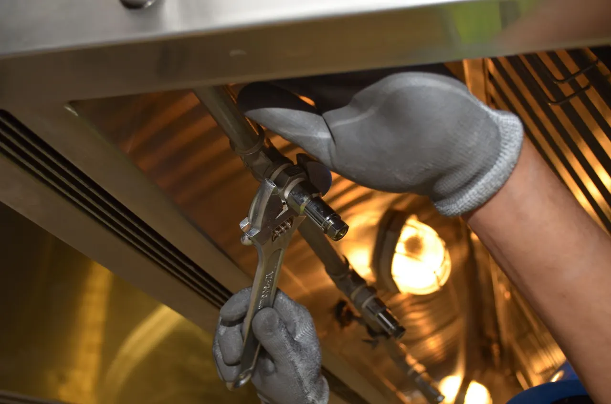

When your tank is leaking or your hot water runs out mid-shower, water heater installation Arlington Heights IL gets you back to normal fast. We size the unit to your household, pull the right permit, and handle gas or electric hookups, expansion tanks, and haul-away in one visit. Most homes in 60004 and 60005 are back to hot water the same day, with a clean, code-correct install you can inspect yourself.
Every standard install covers the parts and labor most swaps need. If we find something extra, like a failed shut-off valve or a gas line that needs rerouting, we explain it and quote it before we proceed. Here is what is in the base scope.
New Tank and Standard Fittings
A correctly sized Rheem, Bradford White, or AO Smith tank, plus new supply lines, Teflon tape, and a fresh water heater anode rod. We match the unit to your household and fuel type.
Drain, Remove, and Haul Away
We drain the old tank, disconnect the gas or electrical feed, and carry it out for recycling. The old unit does not stay in your garage or on the curb.
Overflow Pan and Drain Line
A new pan with a drain line routed to a safe discharge point, so a future leak does not flood the floor. We check the pan drain flows before we call the job done.
Code-Correct Venting and Hookups
Proper flue rise, a sediment trap on gas units, and a correctly sized breaker on electric units.
Full Hot-Water Test
We purge air from every hot tap, check for weeping fittings with a pressure gauge, and confirm the temperature at the farthest fixture. You see the result before we leave.
Homes and businesses.
The approach is the same for a home and a business. What changes is the access, the schedule and who needs the paperwork.
For Homes
A failing tank disrupts the whole household, so we schedule around your morning and aim to have hot water back the same day. We walk you through the size choice before anything is ordered.
Tank weeping from the bottom
Hot water runs out fast
Popping or rumbling sounds
For Businesses
Tenants and customers notice cold water immediately, so we plan commercial swaps around your operating hours. We size the unit for peak demand and coordinate the inspection.
Failed tank before opening
Peak-demand sizing
Inspection coordination
Water Heater Installation Arlington Heights IL Done Right
A plain-language look at what Water Heater Installation involves and when it is needed.
Water heater installation Arlington Heights IL means removing the old tank or heater, checking the shut-off valve, gas line or 240-volt circuit, and setting a correctly sized unit on a level, drained pan. We cut out corroded nipples, replace the Teflon tape and supply lines, and add a new water heater anode rod so the tank lasts. Every job ends with a pressure gauge check and a full hot-water test at the farthest fixture.
Arlington Heights homes built from the 1950s through the 1990s usually hide their heaters in tight basement corners or closets off the kitchen, which makes tank water heater installation Arlington Heights IL a two-person job with a drain snake and a shop vac on standby. If your unit is 10 to 12 years old, popping, or leaving rust in the hot side, call for water heater installation near me Arlington Heights IL before the tank lets go on a Sunday night.
A correct install starts with the right size and ends with a hot-water test at the farthest tap.
What it is
Removing an old water heater and installing a correctly sized, code-correct unit with pan, fittings, and haul-away.
When you need it
When the tank leaks, hot water runs out fast, or the unit is 10 to 12 years old and failing.
What to expect
A call-ahead, a drained and removed old tank, a new unit tested at every hot tap, and a swept floor.
What to Expect on Install Day
You get a call-ahead, a drop cloth, and a walkthrough before we touch a fitting. Here is the five-step sequence we run on every water heater install Arlington Heights job.
Call and Confirm
We ask the tank's age, fuel type, and location, then quote a range over the phone. If the unit is leaking, we treat it as priority and aim for same-day water heater installation Arlington Heights IL whenever the schedule allows.
Call ahead
Quote range
Book slot
Drain and Disconnect
We shut the cold inlet, kill the gas valve or breaker, and drain the tank with a hose to the floor drain. Old supply lines and the Teflon tape come off, and we check the shut-off valve for a clean seal before it goes back into service.
Shut inlet
Drain tank
Disconnect
Set and Connect
The new unit goes on a level pan with a fresh water heater anode rod. We solder or crimp copper pipe and PEX tubing to code, reconnect the gas line or 240-volt feed, and set the flue with the correct rise.
Set pan
Connect lines
Vent flue
Fill and Test
We purge air from every hot tap, check for weeping fittings with a pressure gauge, and run the burner or element through a full cycle. You see the temperature at the faucet before we pack up.
Purge air
Check pressure
Run cycle
Haul Away and Walkthrough
The old tank goes on the truck for recycling. We label the shut-off, note the install date on the unit, and leave the area swept. Total time runs three to five hours on a standard tank swap.
Haul away
Label valve
Walkthrough
Tools and Methods We Use
Move across a circle, or focus it and press Enter, for an illustrative thermal view of the photograph.
Pipe wrench and tube cutter
Breaking loose seized unions and cutting copper cleanly so the new connections seat without leaks.
Soldering torch and PEX crimping tool
Making code-correct copper sweat joints or PEX crimp connections, depending on what the existing system uses.
Pressure gauge
Checking incoming pressure and confirming the new unit holds after fill, so a weeping fitting is caught before we leave.
Drain snake and shop vac
Clearing a slow pan drain or floor drain and removing residual water from the old tank and the floor.
RIDGID and Milwaukee tools
Cutting, tightening, and testing with pro-grade equipment that holds up on seized anode rods and old fittings.
Thermal views are illustrative, generated from the photographs.
Methods
Leak detection equipment
Confirming whether a puddle is the tank, a supply line, or a nearby pipe before recommending a replacement.
Illinois Plumbing License code compliance
Sediment trap and gas connector replacement
On gas units we install a new sediment trap and connector, then test every joint with leak detection equipment. This is a common miss on unlicensed swaps and a common cause of callbacks.
Anode rod and pan-first setup
We set the new tank on a drained pan and install a fresh water heater anode rod before filling. That combination protects the floor and extends tank life.
Full hot-water purge and test
We open every hot tap to purge air, then check temperature and pressure at the farthest fixture. You see the result before we pack up.
When Arlington Heights Homeowners Call Us
Holiday leak
A 12-year-old tank starts weeping from the bottom the week before Thanksgiving, with family arriving in three days.
We treat it as priority, source a 50-gallon Rheem from the truck, and schedule the swap for the next morning. The old unit is drained and hauled away, and the new one is tested at every hot tap.
Outcome: Hot water is back before guests arrive, and the basement floor is dry.
Condo tankless
A couple in a Vail Avenue condo wants to free up closet space and stop running out of hot water with two showers going.
We check gas capacity and venting, then install a Navien tankless unit on the mechanical wall. The old tank comes out, and we walk through the temperature controls.
Outcome: Endless hot water and a reclaimed closet, with a clean vent termination.

Commercial swap
A property manager in the Arlington Heights Business District has a failed commercial tank and tenants calling by 8 a.m.
We arrive by 9 a.m., swap the unit, and coordinate the Cook County inspection. The gas connector and sediment trap are replaced as part of the job.
Outcome: The building is back in service before lunch, with no tenant complaints.
Low pressure
A homeowner in Old Arlington Heights has galvanized pipes and low hot-water pressure after a previous swap.
We test pressure at the heater and at the farthest fixture, find scale in the hot side, and recommend a short repipe in copper or PEX along with a new anode rod.
Outcome: Pressure at the shower returns to normal, and the new heater is not fighting a clogged line.
Electric and softener
A family in Creekside wants to replace an electric tank before it fails and add a softener at the same time.
We install a new electric unit, set it to 120 degrees, and tie in a water softener so scale does not coat the elements. The whole job is done in one visit.
Outcome: Hot water is steady, and the elements stay clean longer.
Old Arlington HeightsScarsdaleCreekside
How Water Heater Installation Runs in Arlington Heights
Arlington Heights sits in Cook County, where winter incoming water temperatures drop into the 40s and a tank works harder from December through March. Older homes in Old Arlington Heights and Hasbrook often have heaters in tight basement corners with galvanized supply lines, so we plan for a possible short repipe in copper or PEX.
Newer builds in Creekside and Lake Arlington usually have PEX manifolds and easier access. Permits run through the Village, and we handle the paperwork. If you are comparing water heater replacement Arlington Heights quotes, ask whether the price includes a pan, a new anode rod, and haul-away, because those are the line items that separate a complete job from a cheap one.
For a new water heater 60005 Arlington Heights IL installation, we can often schedule within 24 hours.
Old Arlington Heights: Pre-1950 homes with galvanized supply lines and tight basement access; we plan for a possible short repipe and use EPA Lead-Safe practices.
Scarsdale: Mid-century ranches with heaters in utility closets off the kitchen; a 50-gallon tank is the common fit for families of four.
Creekside: Newer construction with PEX manifolds and easy mechanical access; tankless conversions are more common here.
Arlington Heights Business District: Commercial swaps need scheduling around business hours and coordination with the Cook County inspection.
Cold winter incoming water in the 40s: A tank works harder and recovers slower from December through March, so correct sizing matters more than in summer.
Hard water in parts of Cook County: Scale coats elements and shortens tank life; we check hardness and suggest a softener when it is the root cause.
IllustrativeThe thermal view is generated from the photograph. It is not a measurement. Drag the handle, or use the arrow keys once it is focused.
Leaking 12-Year-Old Tank in Scarsdale
Before: A 50-gallon tank was weeping from the bottom seam, leaving a puddle on the basement floor. The shut-off valve was seized, and the old supply lines were corroded.
After: We replaced the valve, installed a new 50-gallon Rheem on a drained pan, and replaced the supply lines. Hot water was back in four hours, and the floor was dry.
Flush the tank once a year and check the anode rod at year three. A softener helps if hardness is high.
Tankless Conversion on Vail Avenue
Before: A couple in a condo ran out of hot water with two showers going and wanted the closet space back. The existing gas line needed a larger connector and a new vent.
After: We installed a Navien tankless unit, upgraded the gas connector, and ran a new vent. The closet is now storage, and hot water is endless.
Descale the heat exchanger once a year in hard-water areas and check the vent termination each fall.
Commercial Swap in the Business District
Before: A failed commercial tank left tenants without hot water on a Monday morning. The old unit was rusted through and the sediment trap was clogged.
After: We swapped the tank by lunch, replaced the sediment trap and connector, and coordinated the inspection. Tenants had hot water before the afternoon rush.
Schedule annual flushing and a sediment trap check to keep the unit efficient and the inspection clean.
Problems a New Heater Solves
Most calls start with a symptom, not a diagnosis. These are the four we hear most in Arlington Heights, and what a proper install does about each one.
Rusty hot waterRusty or metallic-tasting hot waterA rusted tank shell is failing from the inside. Flushing will not fix it, and the leak usually shows up within weeks, often on a weekend or holiday. We confirm the tank is the source, not the supply lines, then install a new unit with a fresh anode rod. The rust goes away the same day, and you avoid a basement flood.
Runs out fastHot water runs out in five minutesA tank that cannot keep up usually has a failed element, heavy sediment, or is simply undersized for the household. Cold showers become the daily routine. We test the elements and thermostat, then size a replacement to your bathrooms and fixtures. A family of four in Northgate typically moves up to a 50-gallon unit and stops running out.
Popping noisesPopping or rumbling from the tankSediment has hardened on the bottom and the burner is boiling water under it. The noise gets worse, efficiency drops, and the tank fails earlier than it should. If flushing does not clear it, we replace the unit and set the new one on a clean pan. We also check water hardness and suggest a softener if scale is the root cause.
Puddle under tankPuddle under the heaterA leaking water heater can put an inch of water on a basement floor overnight. Drywall, stored boxes, and flooring are at risk the longer it runs. We shut the inlet, drain the tank, and install a new unit with a drained overflow pan. If the floor drain is slow, we clear it before the new heater goes in.
Why Replace Instead of Patch
Hot water back the same day, with a clean floor and a code-correct install.
Same-Day Hot Water
We stock Rheem and Bradford White tanks on the truck, so most water heater replacement Arlington Heights jobs finish in three to five hours. You shower the same night, and we haul the old unit out at no extra charge.
Lower Gas and Electric Bills
A 2026 high-efficiency tank cuts standby loss compared with a 2008 unit. We set the thermostat to 120 degrees and insulate the first six feet of hot pipe, which trims a measurable slice off monthly gas or electric use.
Correct Size, No Cold Showers
We count bathrooms and fixtures before recommending 40, 50, or 75 gallons. A family of four in Scarsdale usually lands on a 50-gallon unit, while a two-person condo near the Miner Street Corridor does fine with 40.
Code-Correct Venting and Pan
We also verify the gas connector and sediment trap, details an unlicensed swap often skips.
What you receive
Clear records you can keep and share.
Install record
Date and model noted on the unit.
Valve label
Shut-off marked for future use.
Test notes
Temperature and pressure results.
Haul-away slip
Old tank removed and recycled.
Tank vs tankless: what fits your home
Tank and tankless both deliver hot water, but they suit different homes and gas capacities.
Tank
Stored hot water in a steel shell.
Lower upfront cost
Fits most basements
Needs floor space
Tankless
Heats water on demand.
Endless hot water
Frees up floor space
Needs gas capacity
Hybrid
Heat-pump assisted tank.
Lower running cost
Needs room air
Slower recovery
What we work with
Copper pipe
PEX tubing
Shut-off valves
Anode rod
Supply lines
Teflon tape
Pressure gauge
Gas connector
Service ZIP codes.
A list like this tells people straight away whether you cover their street. Not listed? Call and ask: it only takes a minute.
Our 12-year-old tank started leaking on a Friday night. Five Star Plumber LLC had a 50-gallon Rheem in by Saturday afternoon. They drained the old unit, replaced a corroded shut-off valve, and hauled everything away. The basement floor was dry when they left, and the hot water was back before dinner.
We wanted to switch to tankless but were not sure the gas line could handle it. They checked the meter, explained the venting, and installed a Navien the following week. The quote matched the final bill, and they walked me through the temperature settings before they left.
A commercial unit failed on a Monday morning and we had tenants without hot water. The crew arrived by 9 a.m., swapped the tank, and had us back in service before lunch. They coordinated the inspection and left the mechanical room cleaner than they found it.
Frequently Asked Questions
Tankless and power-vent units run higher. Gas line work, a failed shut-off valve, or a tight basement access point can add to the total. We quote a range by phone and confirm it on site before any work starts.
A standard tank swap takes three to five hours from arrival to hot water. Tankless conversions and jobs that need new gas piping or venting can run a full day. We call ahead, protect the floor, and tell you the expected finish time before we start draining the old unit.
Count the bathrooms and the people. A two-person home usually fits a 40-gallon tank, a family of four lands on 50 gallons, and homes with three or more bathrooms or a large tub often need 75 gallons or a tankless system. We check incoming pressure and fixture count before recommending a size.
Yes. Haul-away and recycling of the old tank are included in our standard install quote, along with a new overflow pan and standard fittings. We drain the unit, carry it out, and sweep the area before we leave, so you are not stuck with a 150-pound tank in the garage.
Get Water Heater Installation Arlington Heights IL Today
Cold showers do not wait, and neither should you. Call (224) 643-9856 for a same-day quote on water heater installation Arlington Heights IL, with haul-away and code-correct hookups included.